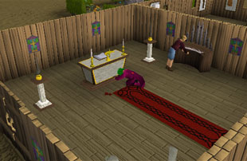
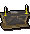
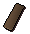
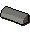
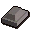
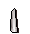
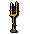
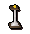
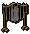

")
Construction - Chapel
Introduction
Show your allegiance to your god when you reach level 45 Construction and gain the ability to create your very own chapel to help with your Prayer skill.
Key Features

There is an important extra feature to the altar: depending on your altar and the number of incense burners you have lit, you will be awarded more Prayer experience for the bones you offer.
| Altar | Experience for using bones with altar |
Experience with 1 burner lit |
Experience with both burners lit |
![[image]](../../img/main/kbase/skills/construction/items/chapel/oak_altar.gif) Oak altar |
Normal experience | 150% of the experience | 200% of the experience |
|  Teak altar |
110% of the experience | 160% of the experience | 210% of the experience |
![[image]](../../img/main/kbase/skills/construction/items/chapel/cloth_altar.gif) Cloth altar |
125% of the experience | 175% of the experience | 225% of the experience |
![[image]](../../img/main/kbase/skills/construction/items/chapel/mahogany_altar.gif) Mahogany altar |
150% of the experience | 200% of the experience | 250% of the experience |
![[image]](../../img/main/kbase/skills/construction/items/chapel/limestone_altar.gif) Limestone altar |
175% of the experience | 225% of the experience | 275% of the experience |
![[image]](../../img/main/kbase/skills/construction/items/chapel/marble_altar.gif) Marble altar |
200% of the experience | 250% of the experience | 300% of the experience |
![[image]](../../img/main/kbase/skills/construction/items/chapel/gilded_altar.gif) Gilded altar |
250% of the experience | 300% of the experience | 350% of the experience |
The Hotspots

- Altar
- Lamp
- Icon
- Musical
- Statue
- Window
- Rug
- Room
The Items
Altar
| Item | Level required | Materials required | Uses | Experience gained | |||||||
Oak altar |
45 |
![[image]](../../img/main/kbase/skills/construction/items/o_plank.gif) Oak plank |
x 4 | You can recharge Prayer here Gives extra Prayer experience, see 'Key features' |
240 | ||||||
Teak altar |
50 |
![[image]](../../img/main/kbase/skills/construction/items/t_plank.gif) Teak plank |
x 4 | You can recharge Prayer here Gives extra Prayer experience, see 'Key features' |
360 | ||||||
Cloth covered altar |
56 |
Teak plank |
x 4 | ![[image]](../../img/main/kbase/skills/construction/items/cloth1.gif) Cloth |
x 2 | You can recharge Prayer here Gives extra Prayer experience, see 'Key features' |
390 | ||||
Mahogany altar |
60 |
 Mahogany plank |
x 4 | Cloth |
x 2 | You can recharge Prayer here Gives extra Prayer experience, see 'Key features' |
590 | ||||
Limestone altar |
64 |
Mahogany plank |
x 6 | Cloth |
x 2 |  Limestone brick |
x 2 | You can recharge Prayer here Gives extra Prayer experience, see 'Key features' |
910 | ||
Marble altar |
70 |
![[image]](../../img/main/kbase/skills/construction/items/marble_block.gif) Marble block |
x 2 | Cloth |
x 2 | You can recharge Prayer here Gives extra Prayer experience, see 'Key features' |
1030 | ||||
Gilded altar |
75 |
Marble block |
x 2 | Cloth |
x 2 | ![[image]](../../img/main/kbase/skills/construction/items/gold_leaf.gif) Gold leaf |
x 4 | You can recharge Prayer here Gives extra Prayer experience, see 'Key features' |
2230 | ||
Lamps
| Item | Level required | Materials required | Uses | Experience gained | ||||
![[image]](../../img/main/kbase/skills/construction/items/chapel/steel_torches.gif) Steel torches |
45 |
 Steel bar |
x 2 | n/a | 40 | |||
![[image]](../../img/main/kbase/skills/construction/items/chapel/wood_torches.gif) Wooden torches |
49 |
![[image]](../../img/main/kbase/skills/construction/items/plank.gif) Plank |
x 2 | ![[image]](../../img/main/kbase/items/tools/steel_nails.gif) Nails |
x 2 | n/a | 58 | |
![[image]](../../img/main/kbase/skills/construction/items/chapel/steel_candlesticks.gif) Steel candlesticks |
53 |
Steel bar |
x 6 |  Candle |
x 6 | n/a | 124 | |
|  Gold candlesticks |
57 |
![[image]](../../img/main/kbase/items/bars/gold_bar.gif) Gold bar |
x 6 | Candle |
x 6 | n/a | 46 | |
![[image]](../../img/main/kbase/skills/construction/items/chapel/incense_burners.gif) Incense burners |
61 |
Oak plank |
x 4 | Steel bar |
x 2 | Lighting helps altar Prayer bonuses | 280 | |
![[image]](../../img/main/kbase/skills/construction/items/chapel/mahogany_burners.gif) Mahogany burners |
65 |
Mahogany plank |
x 4 | Steel bar |
x 2 | Lighting helps altar Prayer bonuses | 600 | |
|  Marble burners |
69 |
Marble block |
x 2 | Steel bar |
x 2 | Lighting helps altar Prayer bonuses | 1040 | |
Note that all lamps require a Firemaking level of 30 to light.
Icon
| Item | Level required | Materials required | Uses | Experience gained | ||||
![[image]](../../img/main/kbase/skills/construction/items/chapel/saradomin_symbol.gif) Saradomin symbol |
48 |
Oak plank |
x 2 | Aligns items in your chapel to Saradomin | 120 | |||
![[image]](../../img/main/kbase/skills/construction/items/chapel/zamorak_symbol.gif) Zamorak symbol |
48 |
Oak plank |
x 2 | Aligns items in your chapel to Zamorak | 120 | |||
![[image]](../../img/main/kbase/skills/construction/items/chapel/guthix_symbol.gif) Guthix symbol |
48 |
Oak plank |
x 2 | Aligns items in your chapel to Guthix | 120 | |||
Saradomin icon |
59 |
Teak plank |
x 4 | Gold leaf |
x 2 | Aligns items in your chapel to Saradomin | 960 | |
Guthix icon |
59 |
Teak plank |
x 4 | Gold leaf |
x 2 | Aligns items in your chapel to Guthix | 960 | |
Zamorak icon |
59 |
Teak plank |
x 4 | Gold leaf |
x 2 | Aligns items in your chapel to Zamorak | 960 | |
Icon of Bob |
71 |
Mahogany plank |
x 4 | Gold leaf |
x 2 | n/a | 1160 | |
Musical
| Item | Level required | Materials required | Uses | Experience gained | |||||||
|  Windchimes |
49 |
Oak plank |
x 4 | Nails |
x 4 | Steel bar |
x 4 | You can play the instrument | 323 | ||
![[image]](../../img/main/kbase/skills/construction/items/chapel/bells.gif) Bells |
58 |
Teak plank |
x 4 | Steel bar |
x 6 | You can play the instrument | 480 | ||||
![[image]](../../img/main/kbase/skills/construction/items/chapel/organ.gif) Organ |
69 |
Mahogany plank |
x 4 | Steel bar |
x 6 | You can play the instrument | 680 | ||||
Statues
| Item | Level required | Materials required | Uses | Experience gained | ||||
![[image]](../../img/main/kbase/skills/construction/items/chapel/small_statues.gif) Small statues |
49 |
Limestone brick |
x 2 | Statues of your chosen god | 40 | |||
![[image]](../../img/main/kbase/skills/construction/items/chapel/medium_statues.gif) Medium statues |
69 |
Marble block |
x 1 | Statues of your chosen god | 500 | |||
![[image]](../../img/main/kbase/skills/construction/items/chapel/large_statues.gif) Large statues |
89 |
Marble block |
x 3 | Statues of your chosen god | 1500 | |||
Window
| Item | Level required | Materials required | Uses | Experience gained | ||||
![[image]](../../img/main/kbase/skills/construction/items/chapel/shuttered_window.gif) Shuttered window |
49 |
Plank |
x 8 | Nails |
x 8 | n/a | 228 | |
![[image]](../../img/main/kbase/skills/construction/items/chapel/decorative_window.gif) Decorative window |
69 |
![[image]](../../img/main/kbase/skills/construction/items/molten_glass1.gif) Molten glass |
x 8 | Window pattern of your chosen god | 4 | |||
![[image]](../../img/main/kbase/skills/construction/items/chapel/stained_glass.gif) Stained glass |
89 |
Molten glass |
x 16 | Window pattern of your chosen god | 5 | |||
Rugs
| Item | Level required | Materials required | Uses | Experience gained | ||||
![[image]](../../img/main/kbase/skills/construction/items/multipleuse/brown_rug.gif) Brown rug |
2 |
Cloth |
x 2 | n/a | 30 | |||
![[image]](../../img/main/kbase/skills/construction/items/multipleuse/rug.gif) Rug |
13 |
Cloth |
x 4 | n/a | 60 | |||
![[image]](../../img/main/kbase/skills/construction/items/multipleuse/opulent_rug.gif) Opulent rug |
65 |
Cloth |
x 4 | Gold leaf |
x 1 | n/a | 360 | |

More articles in
Construction (Members Only)
|
|
|
Further Help
If this article does not help you, you may find the following sections of the RuneScape site helpful:
|
|